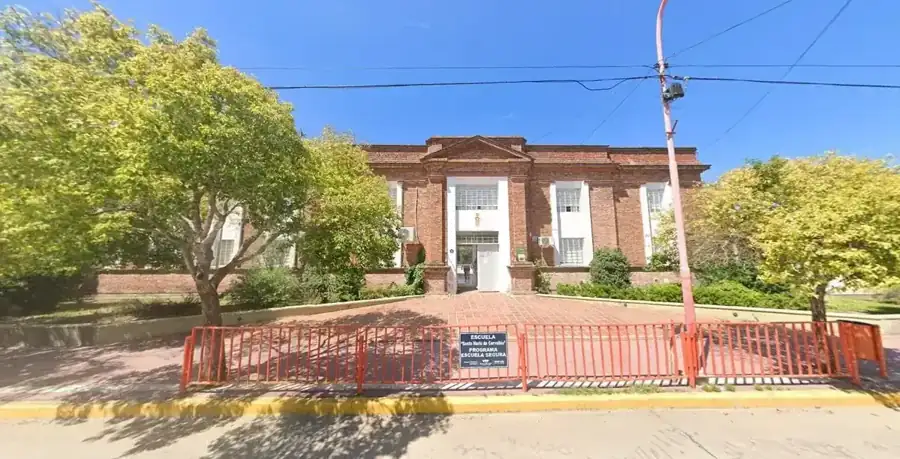
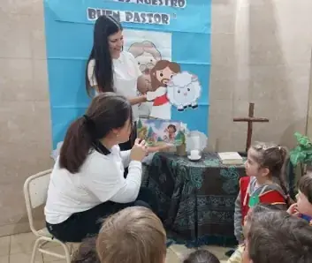
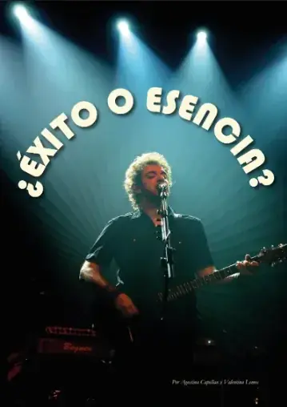

01 · EXPERIENCIAS
Aprender haciendo
Propuestas que conectan los aprendizajes con experiencias concretas.

UNA HISTORIA QUE SIGUE · 1887 — HOY
Una comunidad educativa mercedaria que acompaña cada etapa y transforma el aprendizaje en experiencias con sentido.
PROPUESTA EDUCATIVA
Conocé la propuesta institucional y accedé directamente al nivel que buscás.
Primeros aprendizajes, juego, vínculos y acompañamiento.
Conocer nivel → 02Aprendizajes fundamentales, convivencia y crecimiento.
Conocer nivel → 03Formación integral, proyectos y preparación para nuevos caminos.
Conocer nivel → 04Formación profesional y oportunidades para continuar aprendiendo.
Conocer nivel →IDENTIDAD MERCEDARIA
El INSM integra educación, valores, participación y proyectos. Desde Arroyito, Córdoba, acompañamos trayectorias educativas con una mirada integral.
Conocer nuestra institución →VIDA INSTITUCIONAL
Propuestas que conectan los aprendizajes con experiencias concretas.

Una mirada integral desde los primeros años hasta la formación superior.

Proyectos, producciones y actividades que fortalecen la comunidad.
INFORMACIÓN Y CONSULTAS
Elegí el nivel, consultá por una inscripción o escribinos. Te acercamos la información institucional que necesitás.
PREGUNTAS FRECUENTES
Respuestas rápidas para quienes están conociendo la institución.
Nivel Inicial, Primario, Secundario y Superior.
En 9 de Julio 465, Arroyito, Córdoba.
Podés ingresar a Inscripciones o comunicarte desde Contacto.